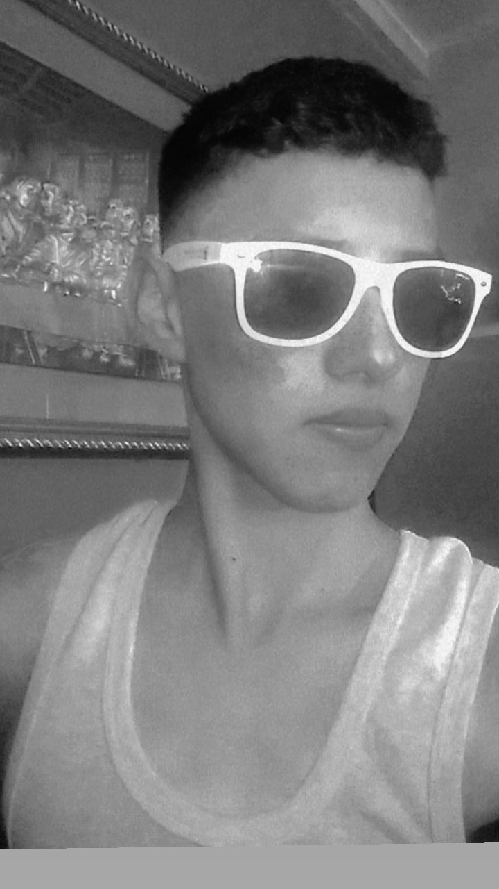
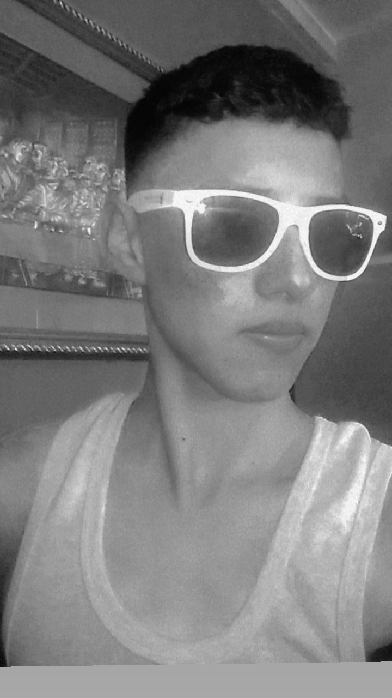

Biografía Personal
Me llamo Oscar René Gonzalez Rojas 
Me llamo Oscar René Gonzalez Rojas 
Naci el 28 de diciembre del 2004, desde pequeño me ha gustado mucho hacer reir a las personas, todo el tiempo estoy haciendo bromas, me gusta hacer reir a las personas.
Estudie primaria en el Colegio Integral Educar, fueron años buenos, aunque los ultimos dos años que pase en el colegio, me regañaban mucho por no entregar tareas, sin embargo nunca llege a perder una materia. Una de las quejas mas frecuentes a mis padres, era que hablaba mucho en clase.

Estudie basicos en el Instituto Guillermo Putezeys Alvarez, me atreveria a decir que pase mis mejores años en este colegio, empeze a jugar futbol y de cierta forma me hice famoso, porque me pusieron un apodo cuando jugaba futbol, y casi todo el colegio me reconocia, jugar al futbol fue lo mejor que me ha pasado, ya que logre crecer de estatura, y tambien me permitio tener las mejores amistades. Formar parte de la selección del colegio fue muy especial, ya que solo elegian a 18 para ir a jugar el torneo de Juventud Don Bosco. En el primer año en selección logramos ganar ese torneo, el segundo año nos quedamos en semifinales, y mi ultimo año en el colegio, pues fue el año que comenzo la pandemia. Lo cual me desiluciono mucho ya que ese año iba a ser Capitan de Selección.
Actualmente estoy en Sexto Perito, y para este año espero poder entregar todas mis tareas, mostrando un buen desempeño academico, para poder lograr el objetivo principal para este ciclo escolar que es graduarme, y luego poder ir a realizar mis practicas, en las cuales espero tener un buen desempeño, para ver si tengo posibilidad de conseguir un trabajo, que me permita poder seguir estudiando en la Universidad.